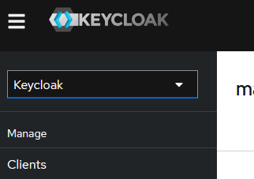
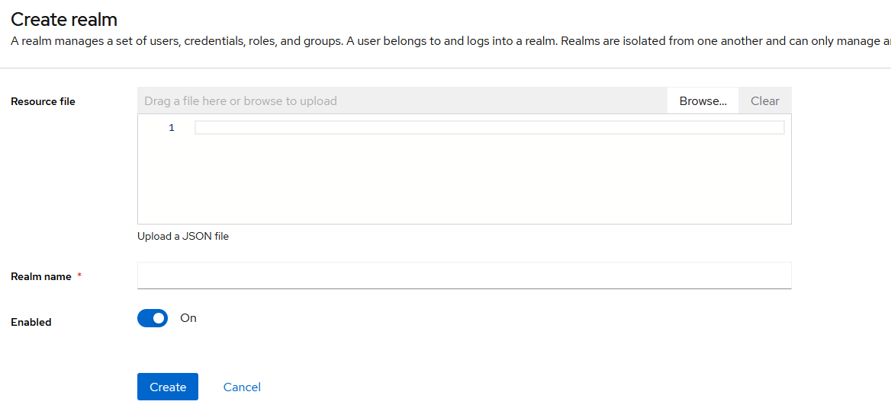
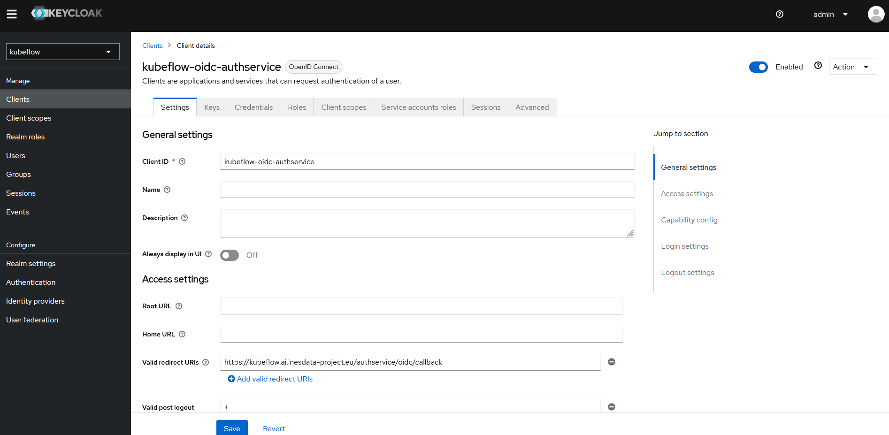

Guía de instalación
Descripción general
Esta guía describe el proceso de instalación de los Manifiestos de Kubeflow sobre los que se basa la plataforma Inesdata-AI-Services. Está basada en el repositorio de Manifiestos de Kubeflow. Dicho repositorio es propiedad del Grupo de Trabajo de Manifiestos.
El repositorio está organizado en tres (3) directorios principales, que incluyen manifiestos para instalar:
| Directorio | Propósito |
|---|---|
apps |
Componentes oficiales de Kubeflow, mantenidos por los respectivos Grupos de Trabajo de Kubeflow |
common |
Servicios comunes, mantenidos por el Grupo de Trabajo de Manifiestos |
contrib |
Aplicaciones contribuidas por terceros, que se mantienen externamente y no forman parte de un Grupo de Trabajo de Kubeflow |
Versiones de componentes de Kubeflow
Versión de Kubeflow: 1.8.0
La siguiente matriz muestra la versión de git que se incluye para cada componente:
| Componente | Ruta de Manifiestos Locales | Revisión Upstream |
|---|---|---|
| Notebook Controller | apps/jupyter/notebook-controller/upstream | v1.8.0 |
| PVC Viewer Controller | apps/pvcviewer-roller/upstream | v1.8.0 |
| Central Dashboard | apps/centraldashboard/upstream | v1.8.0 |
| Profiles + KFAM | apps/profiles/upstream | v1.8.0 |
| PodDefaults Webhook | apps/admission-webhook/upstream | v1.8.0 |
| Jupyter Web App | apps/jupyter/jupyter-web-app/upstream | v1.8.0 |
| Volumes Web App | apps/volumes-web-app/upstream | v1.8.0 |
| KServe | contrib/kserve/kserve | v0.13.0 |
| KServe Models Web App | contrib/kserve/models-web-app | v0.13.0-rc.0 |
| Kubeflow Pipelines | apps/pipeline/upstream | 2.0.3 |
La siguiente es también una matriz con versiones de componentes comunes que son utilizados por los diferentes proyectos de Kubeflow:
| Componente | Ruta de Manifiestos Locales | Revisión Upstream |
|---|---|---|
| Istio | common/istio | 1.17.5 |
| Knative | common/knative/knative-serving common/knative/knative-eventing |
1.10.2 1.10.1 |
| Cert Manager | common/cert-manager | 1.12.2 |
Instalación
Se realizará desplegando los paquetes por separado, verficando que se estan instalando satisfactoriamente antes de proseguir con el siguiente.
Warning
Se utiliza un correo electrónico predeterminado (example@gmv.com) y una contraseña (-). Para cualquier despliegue de Kubeflow en producción, se deberá cambiar la identificación predeterminada siguiendo la sección correspondiente.
Prerrequisitos
Kubernetes(hasta1.29.3) con una StorageClass predeterminadakustomize5.0.3 Kubeflow no es compatible con versiones anteriores de Kustomize. Esto se debe a que necesita el campo
Kubeflow no es compatible con versiones anteriores de Kustomize. Esto se debe a que necesita el campo sortOptions, que solo está disponible en Kustomize 5 y posteriores #2388.
kubectl
Note
Los comandos kubectl apply pueden fallar en el primer intento. Esto es inherente a cómo funcionan Kubernetes y kubectl (por ejemplo, CR debe crearse después de que CRD esté listo). La solución es simplemente volver a ejecutar el comando hasta que tenga éxito.
Instalar componentes
En esta sección, se procede a instalar cada componente oficial de Kubeflow (bajo apps) y cada servicio común (bajo common) por separado, usando solo kubectl y kustomize.
El propósito de esta sección es proporcionar una descripción de cada componente y una idea de cómo se instala.
Nota de resolución de problemas
Se han observado errores como el siguiente al aplicar las kustomizaciones de diferentes componentes:
error: resource mapping not found for name: "<RESOURCE_NAME>" namespace: "<SOME_NAMESPACE>" from "STDIN": no matches for kind "<CRD_NAME>" in version "<CRD_FULL_NAME>"
ensure CRDs are installed first
Esto se debe a que una kustomización aplica tanto un CRD como un CR muy rápidamente, y el CRD no ha alcanzado el estado de Established aún. Puede aprender más sobre esto en este issue de kubectl y en este issue de Helm.
Si se muestra este error, se recomienda volver a aplicar la kustomización del componente.
Antes de comenzar
Warning
Se recomienda encarecidamente revisar el estado de los pods tras la instalación de cada paquete, asegurandose que todos estan en estado Ready antes de continuar con el resto de la instalación. Así en caso de error, será mas sencillo identificar el problema y aplicar la solución correspondiente.
Cert-Manager
Cert-Manager es utilizado por muchos componentes de Kubeflow para proporcionar certificados para webhooks de admisión.
Instalar Cert-Manager:
kubectl apply -k common/cert-manager/cert-manager/base
kubectl wait --for=condition=ready pod -l 'app in (cert-manager,webhook)' --timeout=180s -n cert-manager
kubectl apply -k common/cert-manager/kubeflow-issuer/base
En caso de que recibas este error:
Error from server (InternalError): error when creating "STDIN": Internal error occurred: failed calling webhook "webhook.cert-manager.io": failed to call webhook: Post "https://cert-manager-webhook.cert-manager.svc:443/mutate?timeout=10s": dial tcp 10.96.202.64:443: connect: connection refused
Para más información sobre resolución de problemas, consulta la documentación de Cert-Manager.
Verificación de instalación correcta:
kubectl get pods -n cert-manager
Istio
Istio es utilizado por muchos componentes de Kubeflow para asegurar su tráfico, hacer cumplir la autorización de red y aplicar políticas de enrutamiento.
Instalar Istio:
kubectl apply -k common/istio/istio-crds/base
kubectl apply -k common/istio/istio-namespace/base
kubectl apply -k common/istio/istio-install/base
Verificación de instalación correcta:
kubectl get pods -n istio-system
Knative
Knative es utilizado por el componente oficial de Kubeflow, KServe.
Instalar Knative Serving:
kubectl apply -k common/knative/knative-serving/overlays/gateways
kubectl apply -k common/istio/cluster-local-gateway/base
Namespace de Kubeflow
Crea el namespace donde vivirán los componentes de Kubeflow. Este namespace
se llama kubeflow.
Instalar el namespace de kubeflow:
kubectl apply -k common/kubeflow-namespace/base
Kubeflow Roles
Crea los ClusterRoles de Kubeflow, kubeflow-view, kubeflow-edit y
kubeflow-admin. Los componentes de Kubeflow agregan permisos a estos
ClusterRoles.
Instalar los roles de kubeflow:
kubectl apply -k common/kubeflow-roles/base
Recursos de Istio para Kubeflow
Crea los recursos de Istio necesarios para Kubeflow. Esta kustomización actualmente
crea un Istio Gateway llamado kubeflow-gateway, en el namespace kubeflow.
Si deseas instalar con tu propio Istio, también necesitarás esta kustomización.
Instalar recursos de istio:
kubectl apply -k common/istio/kubeflow-istio-resources/base
Kubeflow Pipelines
Instalar los Multi-User Kubeflow Pipelines como componente oficial de Kubeflow:
kubectl apply -k apps/pipeline/upstream/env/cert-manager/platform-agnostic-multi-user
Dependencias del Multi-User Kubeflow Pipelines
- Istio + Recursos de Istio para Kubeflow
- Roles de Kubeflow
- AuthService OIDC (o servicio de autenticación específico del proveedor de la nube)
- Perfiles + KFAM
Verificación de instalación correcta:
kubectl get pods -n kubeflow
KServe
KFServing fue renombrado a KServe.
Instalar el componente KServe:
kubectl apply -k contrib/kserve/kserve
Instalar la aplicación web de modelos:
kubectl apply -k contrib/kserve/models-web-app/overlays/kubeflow
Verificación de instalación correcta:
kubectl get pods -n kubeflow
Central Dashboard
Instalar el componente oficial Central Dashboard de Kubeflow:
kubectl apply -k apps/centraldashboard/upstream/overlays/kserve
Verificación de instalación correcta:
kubectl get pods -n kubeflow
Admission Webhook
Instalar el Admission Webhook para PodDefaults:
kubectl apply -k apps/admission-webhook/upstream/overlays/cert-manager
Verificación de instalación correcta:
kubectl get pods -n kubeflow
Notebooks
Instalar el componente oficial Notebook Controller de Kubeflow:
kubectl apply -k apps/jupyter/notebook-controller/upstream/overlays/kubeflow
Instalar la aplicación web Jupyter de Kubeflow:
kubectl apply -k apps/jupyter/jupyter-web-app/upstream/overlays/istio
Verificación de instalación correcta:
kubectl get pods -n kubeflow
PVC Viewer Controller
Instalar el componente oficial PVC Viewer Controller de Kubeflow:
kubectl apply -k apps/pvcviewer-controller/upstream/default
Verificación de instalación correcta:
kubectl get pods -n kubeflow
Perfiles + KFAM
Instalar el controlador de perfiles y el Kubeflow Access-Management (KFAM) como componentes oficiales de Kubeflow:
kubectl apply -k apps/profiles/upstream/overlays/kubeflow
Aplicación Web de Volúmenes
Instalar la aplicación web de volúmenes como componente oficial de Kubeflow:
kubectl apply -k apps/volumes-web-app/upstream/overlays/istio
Verificación de instalación correcta:
kubectl get pods -n kubeflow
IMPORTANTE
Se deben revisar los siguientes ficheros para asegurarse de que las URLs están correctamente configuradas antes de continuar con la instalación:
- common/keycloak/base/config-map.yaml
- common/keycloak/base/deployment.yaml
- common/keycloak/overlays/istio/auth-certificates.yaml
- common/oidc-client/oidc-authservice/base/params.env
- common/oidc-client/oidc-authservice/base/statefulset.yaml
- ingress.yaml
Ingress
Aplicar la configuración de Ingress para el clúster de Kubeflow:
kubectl apply -f ingress.yaml
Keycloak
Keycloak es un proveedor de identidad y acceso con soporte para OpenID Connect (OIDC) y SAML 2.0. En esta instalación, Keycloak se configurará para gestionar la autenticación y la autorización de los usuarios. Incluye múltiples opciones de backend de autenticación y permite la configuración de usuarios y roles según las necesidades específicas del entorno. Para cualquier despliegue de Kubeflow en producción, es esencial configurar correctamente los usuarios y las políticas de seguridad en Keycloak.
Instalar Keycloak:
Warning
Para su correcta instalacíon es necesario el uso de la herramienta jq. En caso de no tenerla instalada, ejecutar el siguiente comando:
sudo apt install jq
Una vez verificado que se tiene instalada dicha herramienta, se puede proceder con la instalación:
kubectl apply -k common/keycloak/overlays/istio
kubectl get secrets keycloak-cert -n auth -o json | jq 'del(.metadata["namespace","creationTimestamp","resourceVersion","selfLink","uid","annotations"])' | kubectl apply -n istio-system -f -
Una vez instalado correctamente Keycloak se deberan realizar una serie de ajuestes en la configuracion de la herramienta.
Info
Para acceder a la interfaz de Keycloak se utilizará la URL
https://keycloak-admin.ai.inesdata.upm/auth
para la cual será necesario haber establecido un tunel SSH previamente.
Warning
Se deberá crear el Realm que contiene la configuracíon necesaria para que la plataforme se integre correctamente con Keycloak. Para ello se puede descargar desde aquí .
Para crearlo pulsar en el desplegable de la esquina superior izquierda y hacer click sobre Create realm.

En la pantalla que aparece, clickar sobre Browse, seleccionar el Realm descargado, ponerle un nombre, y hacer click en Create.

Con el Realm en funcionamiento se deberá añadir la URL contenida en la variable REDIRECT_URL del fichero common/oidc-client/oidc-authservice/base/params.env en la sección Valid redirect URIs de la configuración del cliente kubeflow-oidc-authservice tal y como se muestra en la siguiente imagen:

En esa misma ventana verificar también el parámetro Front-channel logout URL y asegurarse de que contiene la URL de acceso a la plataforma.
Verificación de instalación correcta:
kubectl get pods -n auth
AuthService
El AuthService OIDC extiende las capacidades de tu Ingress-Gateway de Istio, para que pueda funcionar como un cliente OIDC:
Warning
Antes de proceder con la instalación del AuthService, completar el parametro CLIENT_SECRET ubicado en common/oidc-client/oidc-authservice/base/secret_params.env con el valor que se encuentra en la UI de Keycloak en la sección Clients -> kubeflow-oidc-authservice -> Credentials -> Client Secret.
Una vez guardados los cambios se puede proseguir con la instalación del OIDC AuthService.
kubectl apply -k common/oidc-client/oidc-authservice/base
Verificación de instalación correcta:
kubectl get pods -n istio-system
Namespace del Usuario
Se utilizará el script kubeflow-admin.sh.
Info
Tras seguir estos pasos y comprobar que se puede acceder correctamente a Keycloak al Dashboard de Kubeflow con las credenciales correspondientes, se puede dar por finalizada la instalacion de la plataforma.